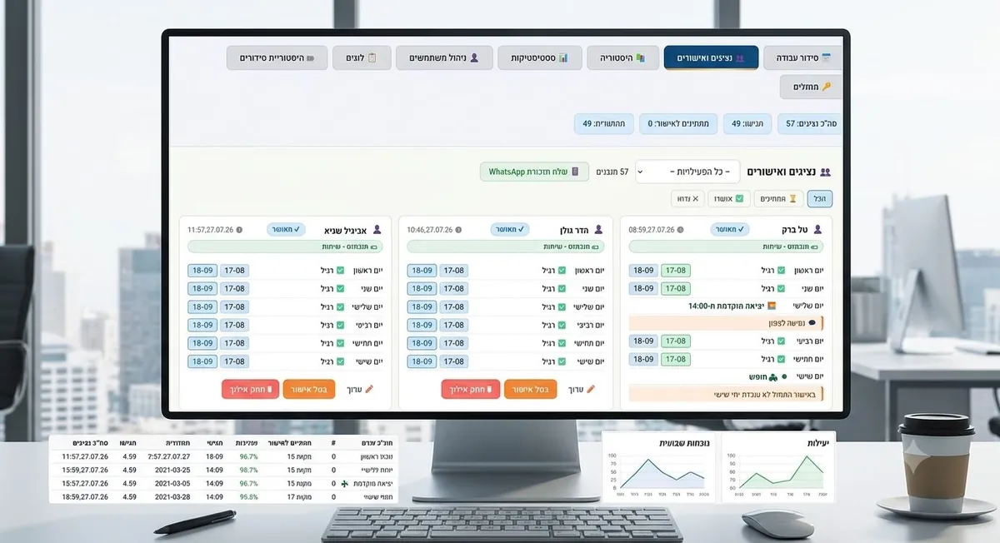

מערכת סידור עבודה
מערכת סידור עבודה שבונה את הסידור השבועי לבד
העובדים מגישים אילוצים מהטלפון, המנהל מאשר בלחיצה, והסידור לשבוע הבא נבנה אוטומטית ונשלח לכל העובדים. בלי אקסל, בלי עשרות הודעות בוואטסאפ ובלי לשבת על זה ערב שלם.
מחשבון
כמה עולה לכם הסידור השבועי?
כמה שעות בשבוע אתם מבזבזים על סידור עבודה?
כולל איסוף אילוצים, בניית הטבלה, שינויים של הרגע האחרון ושליחה לעובדים.
החישוב: שעות בשבוע × 60–70 ₪ לשעה × 4 שבועות. זו הערכה לפי מה שבחרתם, לא נתון חיצוני.
אפשר להחזיר לכם את רוב הזמן הזה. השאירו פרטים, ונראה לכם בשיחה קצרה איך הסידור שלכם נבנה לבד.
איך זה עובד
שלושה צעדים, והסידור מוכן
- העובדים מגישים אילוצים מהטלפון עם קוד אישי: יום חופש, יציאה מוקדמת או הגעה מאוחרת, עם הערה. בלי אפליקציה להתקנה.
- המנהל מאשר או משנה כל אילוץ ממסך אחד, ורואה מי כבר הגיש ומי עוד לא.
- הסידור נבנה לבד ונשלח לכולם לפי האילוצים שאושרו וימי העבודה של כל עובד. בלחיצה אחת כל עובד מקבל את המשמרות שלו.

למי זה מתאים
כשהסידור כבר לא נכנס לטבלה אחת
המערכת מוגדרת לפי הכללים שלכם, ולכן היא שווה הכי הרבה כשהסידור מסובך.
הרבה נציגים, משמרות בוקר וערב ואילוצים שמשתנים כל שבוע. המערכת נולדה במוקד.
עמדות שחייבות להיות מאוישות כל הזמן, ועובדים שמגישים אילוצים שונים כל שבוע.
סידור נפרד לכל סניף, עם תמונה אחת למנהל של כל הצוות.
משמרות סביב השעון, עובדים במשרה חלקית ושינויים של הרגע האחרון.
השוואה
אקסל, אפליקציה כללית או מערכת שמותאמת לעסק
| מה חשוב | אקסל + וואטסאפ | אפליקציית סידור כללית | ShiftSync - A.L Systems |
|---|---|---|---|
| איסוף אילוצים | הודעות, צילומי מסך ותזכורות | טופס קבוע | מהטלפון, לפי סוגי האילוצים שלכם |
| בניית הסידור | ידנית, שעות בכל שבוע | חלקית, לפי תבנית כללית | אוטומטית, לפי מה שאושר |
| מותאם לכללים של העסק | רק בראש של המנהל | מוגבל למה שהאפליקציה תומכת | נבנה סביב הכללים שלכם |
| הפצה לעובדים | צילום טבלה לקבוצה | באפליקציה | כל עובד מקבל את המשמרות שלו |
| הקמה וליווי | — | לבד, מתוך מדריכים | אישית, איתנו |
שאלות נפוצות
מה שואלים אותנו על מערכת סידור העבודה
במה זה שונה מאפליקציית סידור עבודה רגילה?
אפליקציה רגילה נותנת תבנית אחת לכל העסקים. כאן המערכת מוגדרת לפי הכללים של העסק שלכם: סוגי המשמרות, מי יכול לעבוד מתי, ימי העבודה של כל עובד וסוגי האילוצים. ההקמה והליווי נעשים אישית.
העובדים צריכים להתקין משהו?
לא. העובדים נכנסים מהטלפון או מהמחשב עם קוד אישי, בוחרים אילוצים לשבוע הבא ושולחים. אין אפליקציה להתקנה.
כמה זמן לוקח להקים את המערכת?
תלוי במספר העובדים ובמורכבות הכללים. בשיחת הייעוץ הראשונה, שהיא ללא עלות, נבין את הסידור שלכם ונגיד בדיוק כמה זמן זה ייקח.
המנהל יכול לשנות את מה שהמערכת בנתה?
כן. המנהל מאשר או משנה כל אילוץ שהעובדים שלחו, והסידור נבנה לפי מה שאושר. ההחלטה הסופית תמיד אצל המנהל.
איך העובדים מקבלים את הסידור?
בלחיצה אחת המנהל שולח לכל עובד את המשמרות שלו לשבוע הבא. בלי לצלם טבלאות ובלי הודעות בקבוצת וואטסאפ.